Er is online een grote discussie over wanneer de eerste generatie videogames begon en eindigde. In 1972 werd de eerste videogameconsole verkocht voor thuis, terwijl er al in 1968 aan dit project werd gewerkt. Volgens sommigen eindigde de generatie in 1977 door de videogamecrash van 1977, terwijl anderen denken dat de eerste generatie pas in 1983 eindigde met de Compu-vision. De bekendste eerste generatie consoles zijn onder andere de color tv-game, ping-o-tronic en de Odyssey. Voor uitgebreide informatie over de eerste generatie consoles, kunt u op de link Console gen 1 uitgebreid klikken.
De tweede generatie van videogame consoles begon in 1976 en eindigde in 1992. De generatie begon met de Fairchild Channel F en eindigde met de stopzetting van de Atari 2600 in 1992.
De Fairchild Channel Fun is in 1976 op de markt gebracht door Fairchild Semiconductor in Noord-Amerika en in Japan werd het in oktober 1977 gelanceerd als Video Entertainment System of VES. De naam werd gewijzigd naar Fairchild Channel F nadat Atari de VCS had gelanceerd. Het was het eerste programmeerbare videogamesysteem met plug-in cartridges die ROM en microprocessor code bevatte, in plaats van specifieke circuits. Kenmerkend voor dit systeem was de pauze-button, waarmee de game gepauzeerd kon worden en de tijd of snelheid veranderd kon worden zonder dat de score werd aangepast. In 1979 werden de rechten voor de console opgekocht door Zircon, en werd de Channel F System II uitgebracht. Bij deze console waren onder andere het geluid verbeterd en konden de controllers verwijderd worden. Tegen deze tijd was de videogamemarkt echter gecrasht en Fairchild ging van de markt.
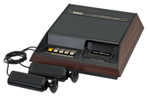
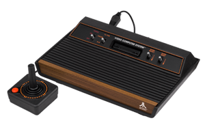
In 1977 lanceerde Atari hun Video Computer System (VCS), later de Atari 2600 genoemd. Atari had de exclusieve rechten voor de meeste populaire arcade games in de tijd. Hierdoor werd het de meest verkochte gamingconsole van de tweede generatie, ondanks inferieure graphics ten op zichte van andere consoles. Net zoals de Fairchild Channel F, was de Atari 2600 ook CPU gebaseerd. In 1982 heeft Atari de Atari 5200 uitgebracht die in competitie ging met de Intellivision. Echter wegens teleurstellende verkoopcijfers, werd deze in 1984 al van de markt gehaald.
De Magnavox Odyssey2 is in 1978 op de markt gebracht in Noord-Amerika, Zuid-Amerika, Japan en Europa. De console zag er anders uit, afhankelijk vanuit welk land deze werd verkocht. In Europa werd de console uitgebracht als de Philips Videopac G7000, ookwel bekend als de Videopac. Europese varianten hadden onder andere geen aan/uitknop. Een zeldzaam model, de Philips Videopac G7200, werd enkel in Europa uitgegeven en had een ingebouwde zwart-wit monitor.
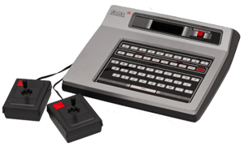
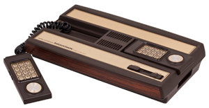
De Intellivision is een video game console gemaakt in 1979 door Mattel Electronics. De naam Intellivision stond voor intelligent television. De ontwikkeling van de console begon in 1977, in het jaar dat Atari de Atari 2600 uitbracht. De intellivision was de eerste console met een touchpad directionele controller en op tegels gebaseerde speelvelden met een vloeiende multidirectionele scroll. Er werden tussen 1980 en 1983 meer dan 3 milioen consoles verkocht, en dit was dan ook de enige console die in competitie met de Atari 2600 ging. In 1983 werd de Intellivison II uitgebracht als goedkopere en compactere versie van de Intellivision, maar helaas had deze geen groot commercieel succes. In 1984 verkocht Mattel de rechten aan INTV, en in 1990 werd de console van de markt gehaald.
De derde generatie consoles werden geproduceerd tussen 1983 en 2003. Deze generatie stond ook bekend als de 8-bit era en begon met de release van 2 systemen: de Nintendo Family Computer (Famicom in Japan, en later bekend als de Nintendo Entertainment System of NES) en de SEGA SG-1000. Het begin van deze generatie betekende het einde van de Noord-Amerikaanse videogame crash, en de verplaatsing van dominantie van de videogame consoles van Noord-Amerika naar Japan.
In 1983 werd de Famicom in Japan uitgebracht, en in 1985-1986 werd de NES in grote delen van Europa en Noord-Amerika uitgebracht. In 1993 kreeg Brazilië pas de NES. De NES was bij uitstek de meest populaire console van de derde generatie. Wereldwijd zijn er meer dan 60 miljoen consoles verkocht, wat mede dankzij het enorm populaire spel Super Mario Bros kwam dat 40 miljoen kopieën verkocht. De populariteit van de console kwam ondermeer doordat Nintendo een afspraak had met de makers van games, waardoor er maar 3 games per jaar mocht worden uitgebracht, en de makers van deze games geen games voor andere consoles mocht maken. Dit kwam door de ondergang van de Atari 2600, die volgens velen kwam doordat er te veel slechte games werden gemaakt. In 1995 werd de NES van de markt gehaald in Europa en in Noord-Amerika, en in 2003 werd de Famicom in Japan van de markt gehaald.
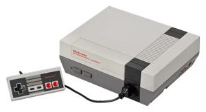
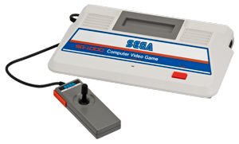
In 1983 werd de SG-1000 uitgebracht door Sega in Japan op dezelfde dag dat Nintendo de Famicom uitbracht. In andere landen was de SG-1000 bekend als Sega-1000. Het commercieel succes was niet zo groot als de opvolger Sega Master System, maar er werden toch 2 miljoen consoles verkocht. Dit was vooral doordat Nintendo de Famicoms moest terugroepen door een verkeerd circuit. Toen Famicom terug op de markt was, begon deze echter snel de marktpositie over te nemen door betere graphics en bekendere spellen. Een geüpdate versie, de SG-1000 II, werd uitgebracht in 1984. Deze had een nieuw uiterlijk en de joysticks konden wel los worden gehaald van de console.
Het Sega Master System is een 8 bit video game console die in 1985 in Japan op de markt gebracht werd als Sega Mark III. In de jaren erop werd het Sega Master System wereldwijd op de markt gebracht. In de Mark III en de vroege Sega Master System kon men zowel cartridges als sega cards gebruiken, terwijl in de Sega Master System II er enkel nog cartridges konden worden gebruikt. De console werd uitgebracht als competitie tegen de NES, maar wegens het licentiebeleid van Nintendo dat betere spellen had, slaagde Sega hier niet in, in Noord-Amerika en Japan. In Europa en Brazilië had het echter wel een groter marktaandeel dan de NES. Er zijn zo'n 13 miljoen consoles wereldwijd verkocht, en in Brazilië wordt de console nog steeds verkocht. Dit zorgt ervoor dat het de langst-verkopende console ter wereld is.
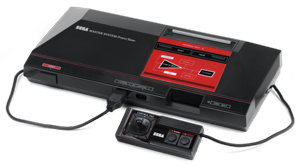
De vierde generatie staat bekend als de 16 bit era. Deze generatie begon in 1987 met de release van NEC Home Electronics's PC Engine(ook wel bekend als de TurboGrafx-16 in Noord-Amerika). Ook al was dit de eerste console, het was zeker niet de populairste. Onder andere de SNES en de Mega Drive waren populairder. Daarnaast verkocht men ook handheld systemen zoals de Gameboy en de Sega Game Gear. De grootste verschillen met de derde generatie, waren onder andere de 16-bit microprocessors, multi-knoppen controllers, betere kleuren en stereo geluid. De vierde generatie consoles eindigde in 2004 toen de Neo Geo van de markt werd gehaald.
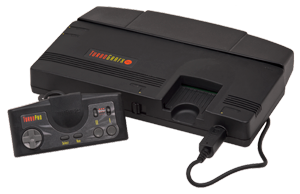
De TurboGrafx-16 is in Frankrijk en in Japan bekend als de PC Engine, en werd in 1987 op de markt gebracht door NEC Home Electronics. Wat zeer opvallend is, is dat het een 8-bit CPU gebruikte, maar wel een 16-bit grafische processor in de 16-bit era. Ook al werd dit als misleidend door sommigen gezien, de verkoopcijfers leden er niet onder en waren zelfs hoger dan deze van de Famicom in Japan. Het werd uiteindelijk de grootste rivaal van de Super Famicom. In Noord-Amerika werd het helaas geen groot succes, waarschijnlijk door te weinig marketing. Er waren enorm veel add-ons te verkrijgen voor de TurboGrafx-16, waaronder een adapter waarmee je met meerdere controllers kon spelen, en een cd-rom add-on. Na de PC Engine werd er nog een PC Engine SuperGrafx gemaakt die beter zou zijn dan het voorgaande model, maar wegens geen succes werd deze snel weer van de markt gehaald. In 1994 werd de PC Engine van de markt gehaald en kwam de PC-FX ervoor in de plaats, wat een vijfde generatie console was. Meer informatie over de PC-FX vindt u op deze pagina over de 5de tot 8ste generatie consoles
De Sega Genesis (Sega Mega Drive buiten Noord-Amerika) werd in 1988 op de markt gebracht in Japan. In Zuid-Korea noemde de Mega Drive de Super Gam*Boy en later de Super Alladin Boy. Er werden meer dan 900 games uitgegeven voor de Mega Drive en met behulp van een adapter, kon men zelfs spellen spelen van de Sega Master System. In Japan werd de Mega Drive geen groot succes, wegens competitie met de Super Famicom en de PC Engine. In Noord-Amerika, Brazilië en Europa werd het echter wel een aanzienlijk succes. Dit kwam vooral door de arcade game ports, waardoor men deze spellen op de Mega Drive konden spelen, en de populariteit van de Sonic series. In totaal werden er meer dan 30 miljoen consoles wereldwijd verkocht. In 1997 is Sega wereldwijd officieel gestopt met de verkoop van de consoles, maar onderandere AtGames verkoopt nog steeds re-releases in Europa en in Noord-Amerika. Ook verkoopt Tec Toy nog steeds de consoles in Brazilië, net zoals ze met het Sega Master System doen.
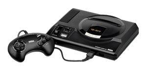
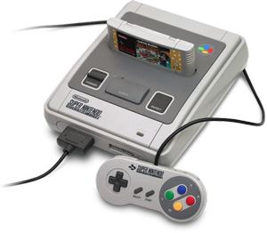
De Super Nintendo System of Super Famicom was de best verkopende console van de 16-bit era. Het was de opvolger van de NES of Super Famicom en kwam in 1990 op de markt in Japan. De console had geadvanceerd geluid en graphics voor die tijd. Dit zorgde ervoor dat de console nog enorm populair was in de 32-bit era (5de generatie consoles), en dat er meer dan 30 miljoen consoles verkocht werden voordat console van de markt werd gehaald in 2003. Ook al was de SNES nooit zo populair als de NES, die meer dan 60 miljoen consoles had verkocht, toch blijft het enorm populair bij mensen die van retrogames houden. Dit zien we bijvoorbeeld aan de mini SNES classic die in 2017 werd uitgebracht en binnen enkele minuten in veel landen uitverkocht was. De populariteit kwam weer deels door het licentiebeleid van Nintendo. Dit was enigszins versoepelt ten op zichte van de NES, maar gamemakers mochten nog steeds slechts 5 games per jaar uitbrengen voor de SNES, en de games mochten pas na 2 jaar aan andere consoles worden verkocht. Door de stijgende populariteit van Sega's PC-Engine kon Nintendo dit echter niet blijven doen, en steeds meer gamemakers begonnen games voor alle consoles te maken.
De Neo Geo was een cartridge-gebaseerde arcade systeem bord dat werd uitgegeven door SNK Corporation in 1990 in Japan. Het arcade systeem werd op de markt gebracht als een 24-bit systeem, maar de CPU was technisch gezien een 16/32-bit processor, met een 8/16-bit coprocessor en een 24-bit grafische processor. Origineel was het een MVS (Multi Video System) arcade-machine die op munten werkte. Daarna werd een console versie gemaakt die AES (Advanced Entertainment System) werd genoemd. Dit was echter bedoeld als een video-game-winkel versie, waarbij mensen deze konden huren. Wegens het succes werd dit echter later geadverteerd als een luxueuze home console. Doordat de zelfde specificaties in de AES zaten als in de Neo Geo, was dit een enorm krachtige home console voor die tijd. De Neo Geo was vooral populair doordat er 6 ROM-slots in zaten, de lage kosten van de behuizing en het compacte formaat. Buiten Japan heeft de Neo Geo weinig bekendheid gekregen. In totaal zijn er bijna 1 miljoen arcade-machines verkocht, voordat deze van de markt werd gehaald in 1997.
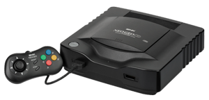